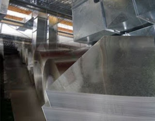

Jual Genteng Metal di Balikpapan ☎ ??? (www.dis.or.id)
Galvalum sudah menjadi primadona bagi banyak orang yang bekerja dalam industri pembangunan. Bisakah anda membayangkan bagaimana sebuah bangunan tanpa atap? Apakah kita masih bisa menyebut bangunan tersebut sebagai bangunan? Mungkin lebih tepat bila kita menyebutnya bangunan yang terbengkalai. Karena tanpa atap maka sebuah bangunan tidak dapat disebut bangunan dan hanya dapat disebut sebagai bangunan terbengkalai. Atap seperti halnya namanya membutuhkan rangka dan atap utama sebagai bahan penutup sebuah bangunan. Berat atap yang saya maksud disini tidaklah seberapa, karena berat yang tertopang pada galvalum tersebut sudah tersalurkan dengan baik sehingga tidak akan membebani atap maupun galvalum. Ada pula atap galvalum dengan bentuk unik seperti atap lengkung, gelombang dan lain sebagainya. Apa yang terjadi? Tentu anda tahu, atap tersebut tidak akan bertahan lama dan bahkan bisa langsung roboh karena tidak adanya pondasi yang menyangganya.
Distributor & Supplier Genteng Metal

Genteng metal adalah salah satu jenis genteng yang berbahan dasar Zincalume, bahan ini merupakan salah satu jenis bahan yang digunakan pada baja ringan. Secara sederhana genteng metal Balikpapan adalah salah satu jeni genteng yang terbuar dari kumpulan berbagai bahan logam dan memiliki ciri kas mengkilat, ringan dan tahan lama. Selain itu genteng metal Balikpapan dinilai lebih anti bocor. Genteng metal dinilai lebih praktis dan lebih awet. Apakah anda sedang mencari genteng metal Balikpapan berkualitas? Maka anda berada di tempat yang tepat, silakan kunjungi dis.or.id dan dapatkan info menarik khusus untuk anda yang ingin segera mengetahui keunggulan genteng metal Balikpapan ini.
Silahkan hubungi kami untuk informasi lebih lanjut. kami berusaha mencari kepuasan pelanggan kami. Karena kepuasan dan kepercayaan pelanggan adalah segalanya bagi kami. Bila belum percaya, maka anda dapat mengujungi situs official kami di dis.or.id untuk mendapatkan info yang lebih lanjut dan dapatkan penawaran terbaik dari kami khusus untuk anda.
Info Pemesanan Selengkapnya
Google Maps: https://www.google.com/maps/d/u/0/viewer?mid=18K_Vf8GKnjN9AtE2jUMATDSYvScojDst&ll=-7.269373870070218%2C112.655575&z=16
Note: https://www.facebook.com/notes/distributor-of-industrial-supply/pabrik-supplier-genteng-metal/1783191985314014/
Event: https://www.facebook.com/events/1480458558737554/
Portfolio Produk: https://www.facebook.com/pg/DistributorOfIndustrialSupplyDIS/photos/?tab=album&album_id=1683750531924827
Distributor & Supplier Besi Beton

Besi beton adalah besi yang digunakan untuk penulangan konstruksi beton atau biasa dikenal sebagai fungsi badan bertulang. Besi Beton mengandung banyak batang tulangan yang dapat memikul beban berat. Besi beton dapat menjadi pondasi pada bangunan yang kuat sehingga membuat bangunan yang aplikasikan besi ini dapat kokoh dan tahan lama. Pengaplikasian besi beton pada suatu bangunan kini telah banyak digunakan karena banyak keunggulan yang diberikan oleh Besi beton.
Besi beton terkenal sebagai bentuk besi yang memiliki kekuatan besar dan tahan terhadap berbagai guncangan dan tekanan.
Segera kunjungi dis.or.id untuk mendapatkan besi beton yang anda inginkan. Dengan mengunjungi situs tersebut, anda bisa mendapatkan detail info serta harga yang pastinya sangat murah di bandingkan tempat lainnya. Karena, disan anda bisa mendapatkan besi beton yang anda inginkan yang pastinya sesuai dengan yang anda ekpetasikan.
Distributor & Supplier Steel Grating

Plat Grating terbaru memiliki kualitas terbaik yang bisa digunakan untuk sarana pembangunan pada industri hingga pertambangan. Saat ini, Plat Grating bisa di dapatkan dengan mudah. Untuk permukaan atas bagian kiri didesain bergerigi agar tidak membahayakan Anda. Selain untuk keamanan, juga untuk aksesoris kolam renang. Dengan mencaro steel grating kualitas terbaik, pastinya kualitas bangunan yang anda bangun akan lebih kokoh dan tahan terhadap berbagai cuaca. Plat Grating dapat Anda temui dimana saja.
Anda bisa langsung mendapatkan plat grating dengan kualitas terbaik dengan harga yang cukup terjangkau dengan hanya mengunjungi dis.or.id.
Distributor & Supplier Pipa (Hitam/Gas, Galvanis)

Manfaat dari pipa hitam galvanis memang banyak sekali untuk kebutuhan konstruksi bangunan. Setiap konstruksi bangunan pasti akan memanfaatkan jenis pipa hitam karena ia sangat kokoh, bahkan bagian luarnya telah terlapis oleh stainless steel sehingga menjadikannya tahan korosi. Sifatnya yang tahan karat menjadikan pipa ini dapat diaplikasikan disegala perubahan cuaca Indonesia. Ukuran pipa hitam yang terjual adalah ½ inc sampai 40 inc. Segera hubungi kami untuk info pemesanan selengkapnya maupun berkonsultasi mengenai kebutuhan pipa secara langsung.
Distributor & Supplier Kawat Bronjong/Gabion

Kawat bronjong berfungsi sebagai pencegah erosi. Biasanya ini dilakukan ketika ada jalan atau bangunan yang ada di bawah tebing. Selain itu, sebenarnya kawat bronjong ini juga bisa dikatakan sebagai pemerkuat bukit. Hanya saja, Anda harus tahu kawat ini terbuat dari baja. Kawat ini terbuat dari baja. Tujuannya agar tidak mudah tergerus ketika adanya arus air.
Untuk itu, kini kawat bronjong sangat banyak dibutuhkan pada segal bidang. Disan anda bisa mendapatkan informasi tentang kawat bronjong dengan berbagai ukuran dan harga yang pastinya sangat terjangkau. Tak hanya itu, kawat bronjong yang disediakn juga terdapat bermacam ukuran.
Distributor & Supplier WF H-beam

Besi WF kini menjadi jenis baja struktural yang banyak dikenal masyarakat saat ini. Jenis besi ini banyak dimanfaatkan sebagai bahan konstruksi baja. Besi jenis ini juga cocok untuk Anda pakai guna membangun rumah, industri, jalan raya, pagar, pabrik, dan masih banyak lagi lainnya. Besi WF memiliki daya tahan terhadap suatu bangunan.
Maka dari itu, kualitasnya sudah terjamin. Besi ini tergolong jenis besi yang ringan disertai dengan komponen yang sesuai sehingga Anda tidak perlu keberatan saat memakai jenis besi ini.
Kini anda bisa mendapatkan besi WF dengan berbagai ukuran tentunya dengan harga yang sangat terjangkau. Disana anda bisa mendapatkan besi tersebut dengan kualitas terbaik serta harga yang sangat terjangkau. Segera kunjungi situs tersebut dan dapatkan penawaran menarik. Pastinya dengan harga yang sangat terjangkau.
Distributor & Supplier Expanded Metal

Expanded metal atau yang biasa dikenal dengan sebutan X.P.M. ini merupakan salah satu produk hasil dari kemajuan teknologi saat ini. Dimana Expanded Metal ini dibuat dengan menggunakan baja berkadar karbon rendah tanpa di las, tanpa sambungan dan dikenal lebih kuat. Expanded Metal memiliki keunggulan dibandingkan dengan yang lain dari sisi kekuatannya yang cukup bagus serta biasa digunakan sebagai instalasi pagar, lantai, ataupun dinding.
Kini anda bisa membeli expanded metal yang anda inginkan dengan mengunjungi dis.or.id. Kunjungi dis.or.id untuk memesan expanded metal dengan harga yang murah serta mutu yang terjamin.
Distributor & Supplier Plat (Hitam, Kapal, Bordes, Strip)

Plat yang satu ini mungkin yang paling banyak kita jumpai, bukan sebagai plat bahan bangunan namun sering digunakan sebagai plat lantai pabrik, kendaraan dan berbagai fungsi lainnya. Pada umumnya disebut plate kapal dikarenakan biasa digunakan untuk bahan pembuatan badan kapal dan mempunyai standart spesifikasi material yang beragam untuk spesifikasi. Dis.or.id menjual plat besi yang anda butuhkan dengan harga yang murah. Mahalnya harga tergantung dari ketebalan besi, motif, dan campuran bahan yang digunakan.
Dis.or.id juga menawarkan plat hitam, kapal, bordes dengan ukuran yang telah anda tentukan. Kualitas yang diberikan sudah terjamin dan bisa anda buktikan sendiri. Disini dis.or.id siap melayani anda untuk mencarikan plat yang anda inginkan.
Distributor & Supplier Floor Deck (Bondex)

Anda yang punya rencana pembangunan dan membutuhkan material untuk pengecoran lantai mungkin bisa menggunakan floor deck. Produk material ini berfungsi untuk menggantikan fungsi bekisting pada saat melakukan pengecoran plat pada lantai. Pemakaian dari floor deck juga bisa membuat proses pengerjaan dan pembuatan dak menjadi lebih mudah, cepat dan efisien.
Kini anda bisa mendapatkan floor deck berkualitas dan bermutu tinggi dengan hanya mengunjungi situs dis.or.id. Disana anda bisa mendapatkan floor deck yang anda inginkan dan tentunya dengan harga yang jauh lebih murah di bandingkan dengan tempat lainnya.
Distributor & Supplier Atap Galvalum

Saat ini bangunan modern minimalis dan properti sudah sering dijumpai menggunakan atap galvalum. Sifat galvalum yaitu ringan dan tipis namun memiliki kualitas tinggi.
Primadona galvalum ini dinilai lebih efektif jika dibandingkan dengan galvanis.
Besar kecilnya galvalum tergantung pada kebutuhan anda. Harus diakui bahwa atap seng yang digunakan dapat menyebabkan rumah terasa panas. Bahannya yang terkomposisi dengan baik membuatnya tidak berisik bahkan ketika hujan, tahan lama dan anti karat. Karena galvalum mempunyai daya tahan karat 4x dari galvanis. Perbedaan ukurannya terletak pada panjang, lebar dan tebalnya.
Distributor & Supplier Atap Lengkung

Bentuk dari setiap atap tersebut sangat beragam. Bahan penutup atap haruslah dari bahan yang kuat menahan berbagai macam kondisi cuaca. Jarang sekali kami melihat bahwa atap galvalum lengkung ini dapat jatuh karena tiupan angin kencang.
Kekuatan dan keunggulannya kiat membuatnya semakin dicari orang. Maka sudah pasti bahwa kualitas atap tersebut sangat diragukan. Bila anda ingin mengetahui harga dari setiap jenis atap lengkung maka anda cukup menghubungi kontak yang tertera pada website dis.or.id. Maka anda akan mendapatkan penawaran dengan harga terjangkau. Karena kami adalah tangan pertama yang bertindak sebagai supplier, toko sekaligus distributor. Kunjungi dis.or.id dan kami akan siap membantu kebutuhan anda.
Distributor & Supplier Truss Canal C

Besi kanal C dapat kita temukan hampir dimana saja. Besi kanal C sebutan untuk besi yang satu ini. Besi kanal C ini amat populer dalam dunia pembangunan. Besi kanal C ini lebih banyak di pakai untuk atap sebuah rumah, terutama dalam membangun rangka atap nya. Namun karena semakin susahnya mendapatkan raw materialnya, dan harga yang semakin ahal maka pemilihan besi kanal C menggantikan fungsi kayu dinilai adalah langkah yang tepat. Silakan kunjungi web dis.or.id untuk info lebih lanjut mengenai kebutuhan anda. Disini kami menyediakan berbagai macam kanal c dan truss sesuai dengan kebutuhan anda.
Distributor & Supplier Hollow Galvalum

Apakah anda sedang membutuhkan atau mencari informasi seputar hollow galvalum? Penasaran dengan fungsinya? Harganya? Atau keterangan keterangan lainnya. Sebenarnya ada banyak unsur yang dilibatkan dalam pembuatan hollow galvalum ini, yaitu alumunium, baja, beserta zinc. Namun dominasi bahan sebagian besar menggunakan alumunium dengan presetase rata rata 55%.
Jika kita berbicara masalah ketahanan, tentu hollow galvalum jauh lebih kokoh dibandingkan dengan penyangga plafon yang berbahan kayu biasa. Memang selain memiliki kekuatan yang luar biasa, juga rangka plafon jenis ini memiliki ketahanan yang bisa bertahan hingga berpuluh puluh tahun. Tunggu apa lagi, silahkan hubungi customer service kami untuk melakukan pemesanan hollow galvalume. Namun sayangnya masih banyak pekerja bangunan yang masih terkendala dari segi pemasangan nya. Bukan harga agen ataupun perantara lainnya.
Distributor & Supplier Seng Gelombang

Atap adalah hal penting yang harus diperhatikan pada setiap bangunan. Ia lebih mudah di pasang dan harga jual yang ekonomis dipasaran membuat seng gelombang memiliki banyak peminat. Meskipun begitu, nyatanya seng gelombang memiliki kekurangan yakni ia lebih cepat menyerap panas. Besarnya ukurang seng gelombang membuat banyak orang yang enggan untuk membelinya. Terkadang tak hanya jenis seng gelombang dengan ukuran besarlah yang dicari kebanyakan orang.
Dengan beragam ukuran seng gelombang yang tersedia, pasti anda bingung kan manakah diantara ukuran tersebut yang cocok dan pas bila di aplikasikan pada atap bangunan anda? Seng gelombang untuk atap sebenarnya terbilang fleksibel. Meskipun mahal, namun kami yakin bahwa anda tidak akan menyesal dengan berbagai jenis seng gelombang yang tersedia. Seng gelombang dengan warna ataupun transparan amatlah awet bila dibandingkan dengan bahan pembuat atap lainnya.
Distributor & Supplier Plat Seng

Harga plat galvanis lembaran akan lebih mahal dibandingkan dengan harga per meter.
Banyak orang yang selama ini hanya membeli seng galvalum tanpa mengetahui ukuran yang sesuai dengan kebutuhan nya. Namun apabila anda membutuhkan nya hanya sedikit, misal untuk penyambungan, atau ingin mengganti beberapa bagian talang rumah anda, anda dapat membeli yang per meter saja. Namun jika anda hanya sekedar menggunakan nya untuk kebutuhan renovasi (dalam jumlah yang sedikit) anda dapat membeli yang per meter. Namun apabila anda berencana membangun sebuah atap dari awal, sebaik nya anda membeli plat galvanis lembaran, karena kebutuhan anda banyak dan juga luas, sehingga yang lembaran ini akan lebih efektif untuk anda.
Plat galvanis bisa anda dapatkan dengan membeli lembaran ataupun per meter, harga plat galvanis ditentukan dari ukuran yang anda inginkan. Oleh karena itu, peran atap pada sebuah rumah sangatlah penting.
Distributor & Supplier Besi Wiremesh

Jika anda membutuhkan besi lonjor yang membentuk anyaman anda dapat membeli jenis besi wiremesh pada kami. Banyak orang yang menganggap wiremesh ini dengan sebutan besi anyam. Bentuk anyam dari besi wiremesh tersedia bermacam-macam, ada yang berbentuk kotak ada juga yang berbentuk jajar genjang, setiap jenis besi wiremesh dapat anda pilih sesuai kebutuhan. Dengan memiliki bentuk yang mirip seperti besi anyam, pemanfaatan besi ini sangat banyak terutama dalam dunia konstruksi, salah satunya adalah sebagai plat lantai dan dak beton. Setiap jenis besi wiremesh diperuntukkan untuk kebutuhan yang berbeda-beda, untuk itu anda harus memilih jenis wiremesh sesuai dengan kekuatannya. Untuk bangunan bertingkat besi wiremesh yang digunakan adalah ukuran 8 sampai 10. Sedangkan untuk kebutuhan bangunan biasa, besi wiremesh yang digunakan adalah yang berketebalan 4 – 6. Kami disini menawarkan besi wiremesh dengan kualitas terbaik, di produksi dengan sistem las otomatis sehingga kuat dan susunannya rapi. Untuk anda yang membutuhkan besi ini maka hubungi kontak yang tersedia.
Distributor & Supplier Pagar BRC
.jpg)
Pagar brc di produksi dengan material besi yang memiliki ketebalan berbeda-beda, ada yang 5mm – 8mm. Potongan besi berdiameter tertentu tersebut dig abungkan dengan bantuan mesin las wiremesh. Pagar BRC termasuk pada kategori pagar besi yang siap pakai, anda bisa memanfaatkannya untuk berbagai kebutuhan bangunan. Kekuatan pagar BRC sebagai pagar pelindung sangat bisa diandalkan, karena ia diproduksi dengan tegangan ijin 2900 kg/cm2 sehingga kekuatannya mencapai 2,5 kali lipat dari jenis biasa. 5 kali dari kekuatan besi biasa. Jika Anda membutuhkan pagar BRC ini segera kunjungi situs resmi kami untuk informasi lebih detail. Bagi anda yang membutuhkan pagar BRC anda dapat menghubungi kami untuk informasi pemesanan.
Distributor & Supplier Kawat Loket, Kawat Harmonika

Adalagi jenis kawat yang cocok diaplikasikan sebagai penyekat maupun kawat pagar, yakni kawat loket harmonika ini. Apalagi bila anda membeli jenis kawat loket harmonika yang sudah terlapisi dengan galvanis sehingga ia awet dan tahan terhadap korosi. Anda dapat memesan kawat loket harmonika yang terlapis dengan galvanis untuk kualitas terbaik yang tahan korosi.
Distributor & Supplier CNP & UNP

Besi UNP atau yang biasa disebut dengan besi kanal merupakan besi yang memiliki bentuk lengkung seperti huruf U dan biasanya diaplikasikan sebagai sambungan atau dudukan atap. Selain itu, besi ini banyak dimanfaatkan untuk keperluan girts atau penutup dinding. Spesifikasi dari besi UNP sendiri sebenarnya hampir sama dengan besi WF, hanya saja besi UNP lebih mudah melengkung untuk itu sangat jarang pengaplikasiannya pada kolom bangunan. Besi UNP juga sering dikaitkan dengan besi CNP yang juga masuk dalam kategori kelasnya. Banyak orang yang menyebut besi CNP ini sebagai profil C karena bentuknya melengkung seperti huruf C, meskipun begitu besi UNP dan CNP adalah material konstruksi yang berbeda. Pemanfaatannya bahkan bisa untuk keperluan otomotif.
Distributor & Supplier Besi Siku

Setiap konstruksi bangunan tentu tidak akan luput dari kebutuhannya terhadap besi siku. Bentuk besi siku sudah terukur sehingga bisa dijadikan penyangga yang bisa diandalkan. Untuk panjangnya, kebanyak besi siku dibuat dengan ukuran maksimal 6 meter dengan ketebalan dan panjang sisi sesuai kebutuhan. Untuk info selengkapnya, anda dapat menghubungi kontak yang telah tersedia. Dengan kualitas terbaik, anda bisa manfaatkan besi siku dari perusahaan kami untuk keperluan industri, otomotif, konstruksi, maupun furnitur. Butuh informasi lebih lengkap lagi? Kunjungi saja situs resmi kami di www.dis.or.id
Distributor & Supplier Hollow (Hitam, Galvanil, Galvanis)

Sekarang ini besi hollow pemanfaatannya sudah melebihi kayu, meskipun terbuat dari besi kualitasnya pun tidak dapat diragukan lagi.Sekarang sudah banyak orang yang beralih pemanfaatan dari kayu menjadi menggunakan besi hollow.Banyak orang yang mulai beralih dari pemanfaatannya yang menggunakan kayu beralih pada hollow hitam galvanil.Besi hollow saat ini menjadi material pengganti kayu yang sangat baik. Jika saat ini anda membutuhkan besi hollow, anda dapat menghubungi kontak yang telah tersedia atau kunjungi saja website resmi kami di dis.or.id. Kami telah menyediakan besi hollow hitam galvanil galvanis yang bisa anda pesan langsung. Apabila anda membutuhkan material hollow hitam, kami dapat melayani kebutuhan anda tersebut dengan berbagai spesifikasi ukuran. Kami pun merupakan distributor relasi dari dis.or.id yang menawarkan produk hollow hitam galvanil galvanis dengan kualitas terbaik dan harga yang murah. Terdapat besi hollow dengan berbagai ukuran yang bisa anda pesan langsung, misalnya: ukuran besi hollow 40 x 40 x 2 mm x 6 Meter, 50 x 50 x 3 mm x 6 meter hingga ukuran 150 x 150 x 5 mm x 6 meter.Segera hubungi kontak kami untuk info lebih lanjut. anda dapat memesan besi hollow hitam galvanil galvanis tersebut dengan berbagai ukuran, baik ukuran besi hollow 40 x 40 x 2 mm x 6 Meter, 50 x 50 x 3 mm x 6 meter sampai dengan ukuran 150 x 150 x 5 mm x 6 meter. Kami menyediakan besi hollow hitam dengan ukuran 40, 50, 150 dan lain sebagainya dengan panjang rata-rata 6 meter. Untuk anda yang membutuhkan besi ini, kami menyediakan ukuran besi hollow yang variatif 40 x 40 x 2 mm x 6 Meter, 50 x 50 x 3 mm x 6 meterr sampai dengan ukuran 150 x 150 x 5 mm x 6 meter. Besi hollow bisa dimanfaatkan untuk berbagai keperluan, misalnya seperti pagar, pintu besi, teralis, dan masih banyak lagi. Jika anda membutuhkan besi hollow maka sebelum memesan pada kami anda harus melakukan perhitungan kebutuhan dahulu, seperti berapa panjang dan ketebalan yang diperlukan.
Distributor & Supplier Pipa Pancang

Produk pertama industri DIS adalah pipa pancang. apalagi mengingat banyak yang mencarinya karena memang memiliki fungsi yang sangatlah bermanfaat. apalagi jika berbicara mengenai proyek di atas permukaan laut. Tidak dapat di pungkiri lagi, fungsi pipa pancang ini sangatlah penting. Sedangkan dalam pemesanannya, jangan khawatir karena banyak sekali penjual tiang pancang terpercaya yang bisa Anda temukan. apalagi jika yang di katakan adalah di industri DIS ini. Terutama untuk memilih produk DIS. Sedangkan untuk kualitas pipa pun akan sangat terjamin dengan mutu terbaik. Terlebih jika mengingat berbagai kelebihan dan fungsi nya yang bisa di terapkan di mana-mana.
Jasa Pondasi Bor (Strouss/Borepile)

Ketika melakukan proyek pembangunan rumah sendiri, kualitas yang baik hingga dalam hal pengeboran pondasi pun akan menjadi hal yang di harapkan. Selanjutnya, untuk masalah di mana jasa ini bisa di temukan, maka Anda bisa memesannya di sini dengan mudah. Di sini jasa pondasi bor melayani pengeboran yang mana hasil dan kualitasnya terjamin. Namun perlu di ketahui pula bahwasanya selama proses akan memunculkan suara bising sekalipun tanpa getaran. Akan tetapi perlu Anda ketahui bahwa dalam pengeboran tersebut akan menimbulkan suara cukup bising sekalipun tidak bergetar. Dalam hal ini jika tidak ingin menggunakan jasa bor, Anda bisa membeli mesinnya. Sebenarnya, jika selain Anda menggunakan jasa pengeboran, Anda pun bisa membeli mesin bor sendiri.
Distributor & Supplier Genset (New/Second)

Sebagai penghasil tenagan listrik kini genset sudah banyak di kenal dan di aplikasikan. genset ini merupaka produk yang menggunakan bahan bakar solar sehingga bisa menghasilkan tenaga listrik. Sedangkan untuk pembelian, memang ada genset yang masih dalam kondisi baru mapun genset yang sudah bekas atau second. Sedagkan keduanya, bisa Anda temukan di DIS.
Dalam masalah harga, tentu saja memang genset di jual dengan cukup mahal. Bagaimana tidak, jika kualitas yang di tawarkan saja hampir sama sedangkan harganya lebih rendah.
Distributor & Supplier UPS

Kalau alat elektronik yang satu ini, mungkin memang cukup jarang di ketahui. Hanya saja, yang tidak mengetahui nya pu juga cukup banyak. apalagi bagi pengguna komputer. terlebih bagi pengguna komputer. Sedangkan dari jenisnya, UPS cukup variatif. oleh sebab itu, jika memang ingin membeli UPS, silahkan Anda menyesuaikan dengan bagaimana kebutuhan Anda. Kalau untuk penjualannya sendiir, bisa di dapatkandi DIS dengan kualitas yang sangat memadai. Sedangkan untuk memiliki UPS berkualitas, Anda bisa merujuk pada DIS.
Distributor & Supplier Forklift (Second)

Jika Anda sedang ingin membeli forklif, jangan khawatir karena di sini juga menyediakannya. Termasuk untuk forklif yang dalam kondisi bekas. Memang forklif ini sendiri kini banyak di gunakan oleh berbagai industri, baik itu industri kecil maupun besar. Sedangkan dalam pembeliannya, bisa memilih baik yang baru ataupun yang bekas. Dengan jaminan kualitas yang memadai ini, bisa di pastikan segala aktifitas industri Anda akan berjalan lebih lancar lagi. Nah, dengan kualitas yang bagus ini, maka forklif akan membuat aktivitas industri Anda menjadi lebih mudah dalam berbagai hal. Apalagi, di sini yang di tawarkan adalah forklif yang siap pakai. Sedangkan yang lebih menguntungkan lagi darinya adalah, ketika Anda sudah tidak memerlukannya, maka bisa di jal kembali pada distributor forklif.
Jasa Pembuatan Moulding Inject

Bagi Anda yang sedang bingung membuat moulding inject, jangan khawatir karena disini pun tersedia penawaran jasa untuk membuatnya. bahkan kalau berbicara kualitas hasilnya di sini, bisa di pastikan akan sangat bermutu. Selain itu berapa pun kebtuhan Anda, pasti bisa di layani. Bahkan ketika Anda bingung ide, ada banyak pilihan yang bisa di gunakan dan di sesuaikan dengan kebutuhan. Selanjutnya, silahkan Anda sesuaikan pilihannya dengan kebutuhan yang sedang Anda cari.
Jasa Pembuatan Sparepart Mesin Produksi / Alat Berat

Sparepart tentu saja sudah tidak asing lagi di dunia permesinan. Terlebih jika mengingat lebih jauh bahwa alat ini memiliki fungsi yang cukup penting sehingga membutuhkan perhatian tinggi dalam pembuatannya. Apalagi mengingat dukungan tenaga profesional yang di sediakan sehingga sparepart Anda akan lebih aman. Dalam pembuatannya, alat berat memang tidak bole sampai sembarangan apalagi teledor. Oleh karena itulah di butuhkan hasil berkualitas sehingga bisa bekerja secara maksimal. Sedangkan harga penawaran, untuk setiap alat berat bisa berbeda tergantung jenis dan ukurannya.
Jasa Service Elektronik (Kompor Gas, Dispenser, Mesin Cuci)

Ketika Anda memiliki beberapa alat elektornik yang rusak, apa salahnya jika berusaha memperbaikinya. Oleh karena itu, sebagai penyeimbang, tidak heran pula jika jasa service elektronik yang melayani perbaikan seperti kompor gas, dispenser dan mesin cuci terus bermunculan. Nah, selain perbaikan sebenarnya dalam service Anda bisa juga sekedar melakukan pengecekan terhadap barang elektronik Anda yang di gunaka sehari-hari sehingga tetap aman dan nyaman. Akan tetapi pada umumnya, orang-orang yang melakukan service elektronik adalah pada barang yang bermasalah.
Nah, apakah anda sudah mengerti betapa pentingnya atap untuk keperluan setiap pembangunan? Tentu sangat penting bukan? Atap sangat dibutuhkan dalam setiap pembangunan sehingga membuatnya sering dicari. Dari rumah paling kecil hingga bangunan termegah sekalipun pasti membutuhkan atap sebagai kebutuhan utamanya. Kebutuhan primer seperti atap, memang tidak dapat diragukan lagi fungsinya. Beberapa produk diatas tentunya sudah anda baca, mengingat anda sudah berada di ujung penutup artikel ini. Karena semua bangunan pastinya membutuhkan atap agar dapat terlindung dari serangan cuaca ringan bahkan ekstrim sekalipun.